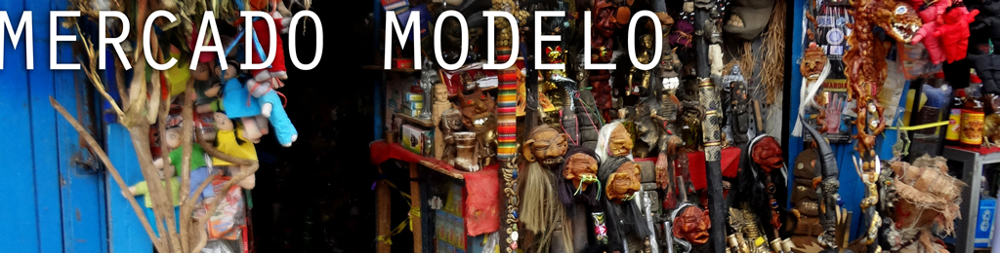
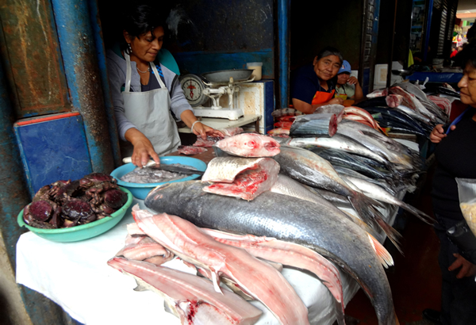
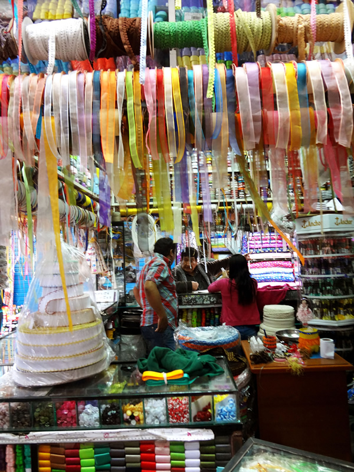
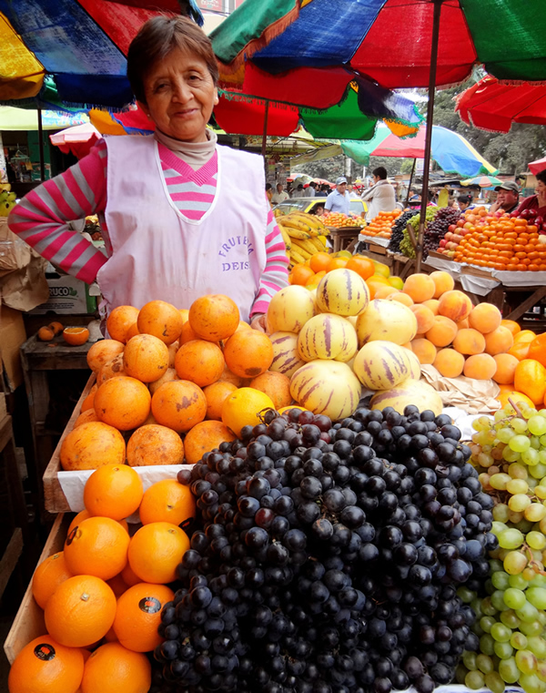

Home of the Witch Doctors
Visiting the “Mercado Modelo” is something that you will not want to miss out on- it is a world of its own! Open every day, this market is in the heart of Chiclayo and is visited by the locals frequently. It sells almost anything you can imagine, with sections for each type of item. For example, there are areas-often stocked ceiling to floor- for fabric and craft supplies, shoes, children’s clothing, animals, fruits, vegetables, meat, fish, wooden products, etc.
One of the most unique sections is the witch doctor, or shaman, section. Here you can find everything from scepters and voodoo dolls to San Pedro and other herbs. Another must-see area is the meat section, locals lay fresh meat out on counters, and prepare it for sale. The fish section contains everything from octopus to crabs to massive sharks. Visiting the Mercado Modelo is something you will never forget, you can get a true cultural experience and might lose track of the hours as you wind your way through the aisles!
| Location |
| The streets that surround the market are Balta, 7 de Enero, Arica, Juan Cuglievan, and Manuel Pardo. |
| Hours |
| Every day 6 AM – 8 PM; Holidays open 6 AM – 3 PM |


